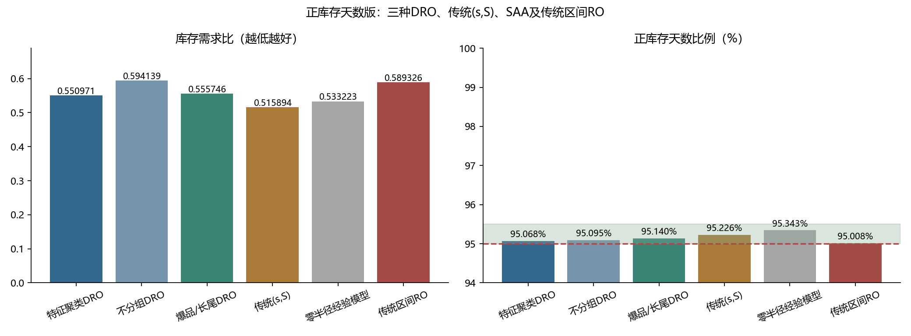
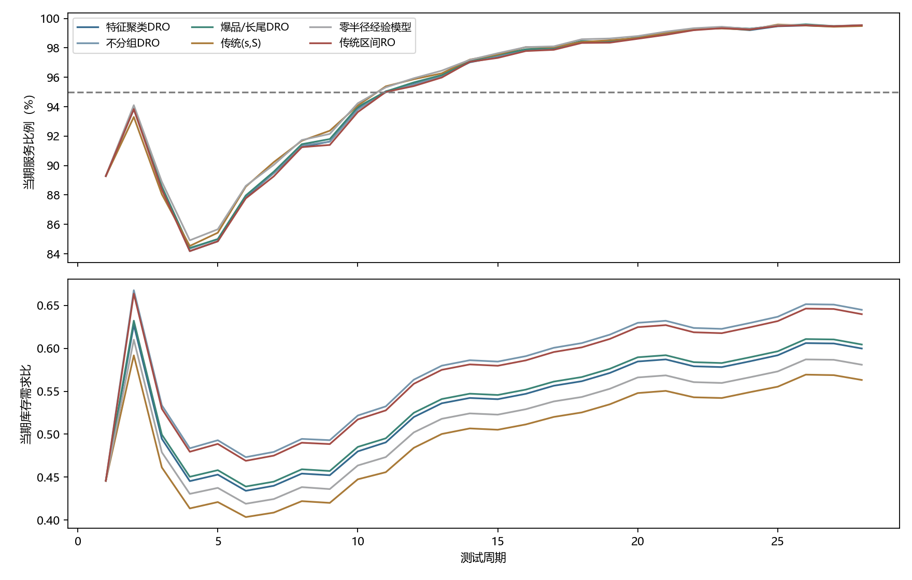

完整6000商品×28天测试。服务要求：正库存商品天比例95%–95.5%。
库存需求比＝累计期末库存/累计需求，越低越好。RO采用需求区间最坏情形，Γ仅在训练集选取。
| 方法 | 需求满足率 | 正库存天数比例 | 库存需求比↓ | 损失需求 |
|---|---|---|---|---|
| 特征聚类DRO | 98.9416% | 95.0679% | 0.550971 | 957491.0 |
| 不分组DRO | 98.9758% | 95.0946% | 0.594139 | 926561.0 |
| 爆品/长尾DRO | 98.9477% | 95.1405% | 0.555746 | 951976.0 |
| 传统(s,S) | 98.8976% | 95.2262% | 0.515894 | 997297.0 |
| 零半径经验模型 | 98.9263% | 95.3429% | 0.533223 | 971288.0 |
| 传统区间RO | 98.9711% | 95.0077% | 0.589326 | 930771.0 |

